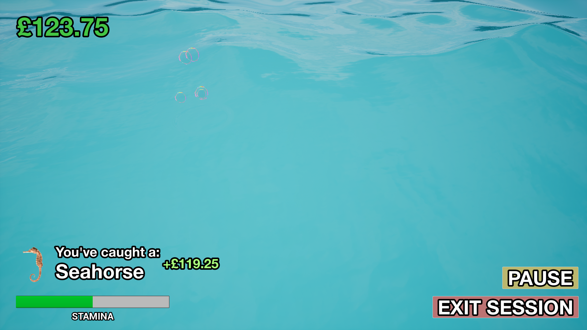
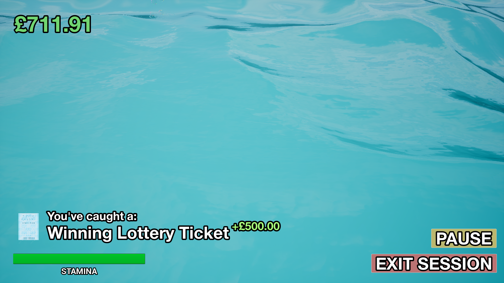
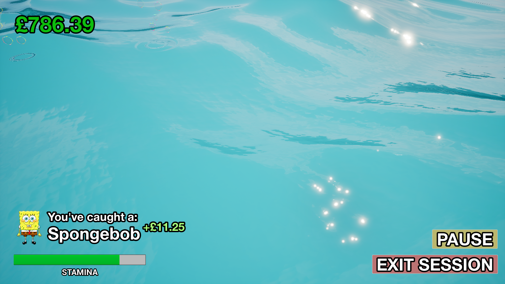
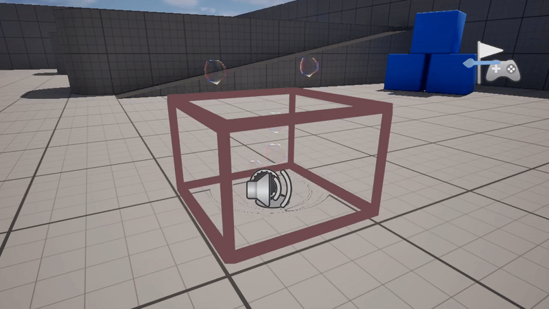

RELEASE TRAILER
"Fish Finder General" was a video game created for the 2025 Global Game Jam and its "Bubbles" theme, the game was planned, prototyped and completed within 48 hours.
ROLES & RESPONSIBILITIES
This was a solo project, therefore I handled the Scripting, UI, and sourcing Art & Sound Effects.
KEY SOFTWARE


GitHub
Unreal Engine 5
CONTRIBUTIONS
- Minor research on the original UI and how it can be improved using Miro.
- Brainstorming 3 Player "Personas" to set guidelines for redesigning.
- Creation of both Low and High Fidelity Wireframes of Interfaces such as the In-Game HUD and Inventory.
- Used Figma's Prototyping capabilities to make the redesign compatible with a Controller.
- Created a new logo for the game using Adobe Illustrator.
SCREENSHOTS



DEVELOPMENT SHOTS

